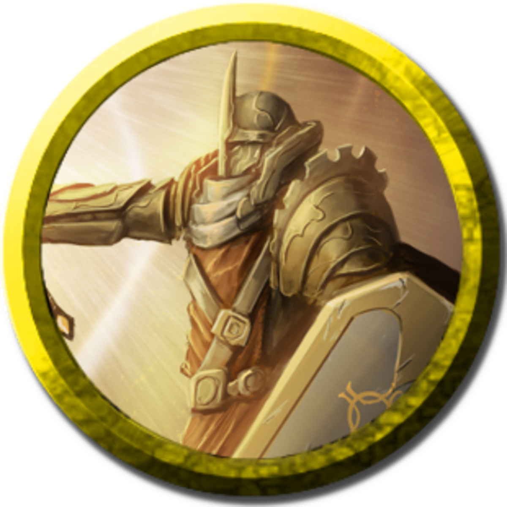
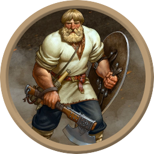
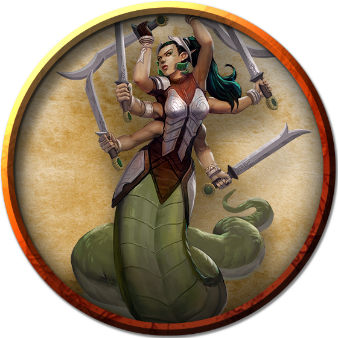
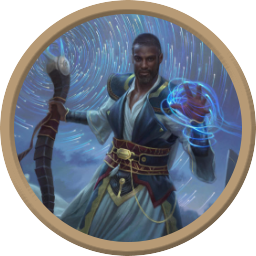

This page shows the builds I used when I played in 20th level one shots where we either fought against each other or against insane homebrew bosses. I've also added some builds I'm planning to play in potential future one shots.
Classes:
17lvl Paladin(Vengeance)
3lvl Fighter(Champion)
This was the first broken build I went for in a PVP, the focus of the build was elven accurracy, where if I rolled with advantage I rolled 3 dice instead of 2. The aim was to crit as much as possible so smite would deal more damage.
I took the mounted combatant feat and summoned a griffon with find greater steed, allowing me to attack any medium or smaller non-mounted creature with advantage.
Taking 3 levels in Champion fighter also increases the crit range to 19-20, essentially doubling the chance I crit on any one die.

Classes:
18lvl Wizard (Order of Scribes)/Sorcerer (Any)
2lvl Cleric (Tempest Domain)
Meteor swarm is the highest AoE damaging spell in D&D dealing 20d6 fire damage and 20d6 bludgeoning damage. Using up your only 9th level spell slot you'd be forgiven for wanting to get the most out of it.
The Tempest Domain Cleric's channel divinity 'Wrath of The Storm' allows you to deal max damage on one roll but only if the damage is lightning or thunder, so we have to find a way to make meteor swarm do those damage types.
Initially I had used the 'Transmute Spell' metamagic ability that allows you to change the damage type of a spell between the elemental damage types making the meteor swarm deal 120 lightning/thunder damage with the additional 20d6 bludgeoning.
Then I dicovered the Order of Scribes Wizard ability that allows you to replace the damage type of a spell with the damage type of another spell in your spellbook of the same level. Taking prismatic wall allows the meteor swarm to deal 240 lightning damage, at the cost of learning a 9th level spell that won't see use.
Classes:
20lvl Barbarian (Totem Warrior)
Bear Totem barbarians are resistant to all damage except psychic when raging, so have double their effective hp, which is even better if they never get hit in the first place. With the capstone abilty of the barbarian making their constitution 24 and having a 20 dexterity, the barbarian's AC would be 22.
Getting spell tattoos to have a familiar cast shield of faith, a +3 shield and a ring of protection should bring the AC up to 28. Additionally wearing a cloak of displacement means all attacks against you have disadvantage. If you are able to get legendary items the Mask of the Dragon Queen adds your charisma modifier to your AC potentially making your AC 33, as well as boosting your resistance to acid, lightning, poison, fire, and cold damage, so that you are immune to all those damge types.

Classes:
20lvl Artificer
Tasha's Cauldron of everything introduced items for each of the spellcasting classes to give a bonus to their spell save dc, with different bonuses depending on the rarity of item. Technically, as each rarity of item has a different name, they can be attuned to at the same time, giving a +6 to your dc if attuned to all of them.
Each item specifies that it only gives a bonus to the dc of spells from the class it corresponds to, apart from the amulet of the devout (for clerics and paladins). Attuning to these amulets does still require that you have levels in either of those classes, unless you are an artificer of at least 14th level as you ignore all class, race, spell and level requirements of items. That couple with the 18th level ability to attune to 6 items allows you to attune to each rarity, bringing the total spell dc bonus to +12. If you switch out the +1 amulet with a robe of the archmagi (which has a +2 bonus instead) that bonus becomes +13.
Classes:
17lvl Wizard(Bladsinger) 3lvl Fighter(Champion)
This build is centred around the potion of giant size, which makes a medium or smaller creature large, as well as sizing up all their equipment. Any weapons scaled up in this way have their damage die rolled tripled (a d8 to 3d8 or 1d10 to 3d10), so finding a weapon to maximise this damage and a way to do a lot of attacks was the aim.
If you are shapechanged into a Marilith you are able to attack 6 times with a longsword, and if you have a dragons wrath weapon that deals extra damage that is tripled, that will deal an insane amount of damage. Presuming you won't have multiple legendary items so you will be using the wakened dragons wrath weapon, it's 1d10 slashing and 2d6 force (choosing amethyst dragon as force isn't commonly resisted) becomes 3d10 slashing and 6d6 force.
On average with all the attacks including the Mariliths tail attack on average you will deal 350 damage per turn. Taking 3 levels in champion fighter means you'll crit twice as often and you will be able to action surge once to do 700 damage in one turn.

Classes:
20lvl Wizard(Enchantment)
This build is centred around a particular abilty of the Blackstaff. When you cast an enchantment spell of 1st level or higher while holding the staff, you can make an arcana check with a DC of 10 + the level of the spell. If the check succeeds, you cast the spell without expending a spell slot.
If you take the prodigy or skill expert feats you can get expertise in arcana, and if you pick up a luckstone, with a 20 intelligence you will have a minimum of 19 in arcana checks, meaning you can cast any enchantment spell essentially at will.
This means you can upcast all lower level enchantment spells to 9th level as well as get to use powerful spells multiple times. Additionally enchantment wizards get the ability to target 2 people with an enchantment spell if it would ordinarily only target one person, allowing you to cast at will twinned power word kill or feeblemind.
